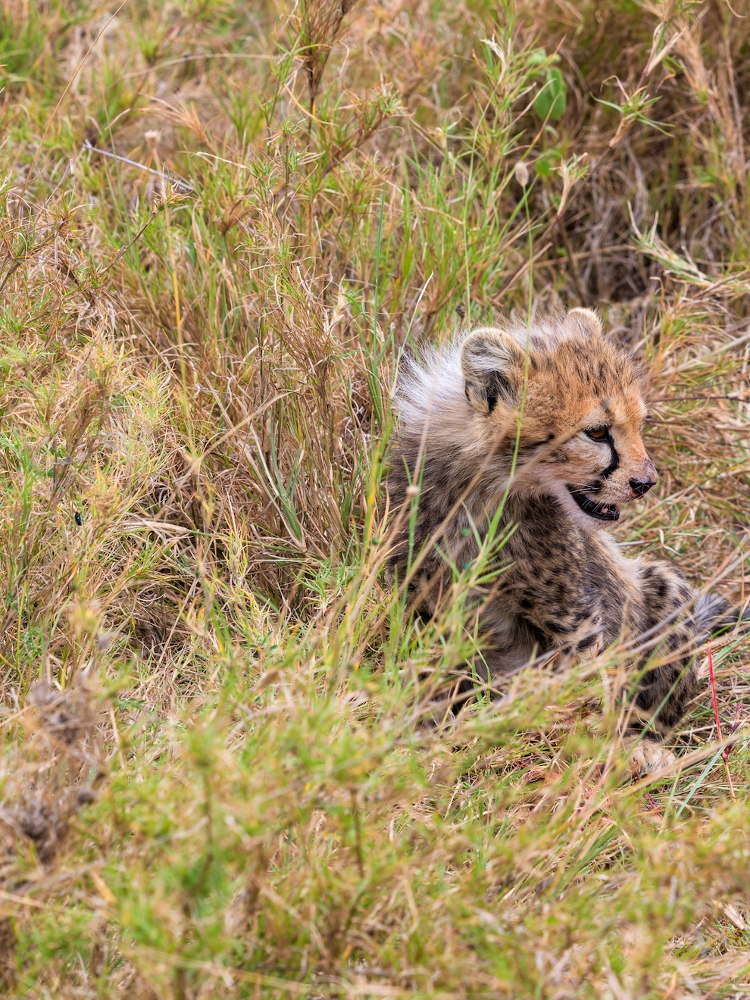
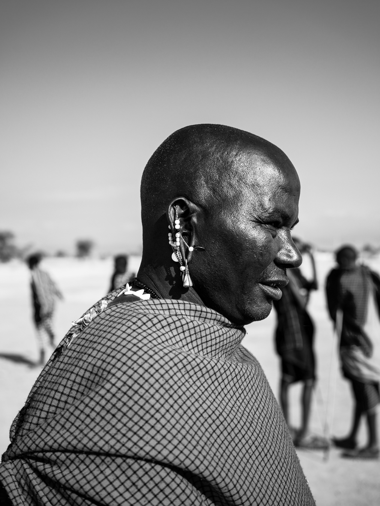

I was in Tanzania, sitting in the back of a Land Cruiser, when I realized something was wrong with how I was seeing my own photographs.
We'd been tracking a cheetah and her cubs for hours. She was eating, and she was nervous. Every time a vulture circled, she'd lift her head and scan the sky. Vultures meant hyenas would come, and hyenas would mean the cubs. She ate quickly, in fragments, never fully relaxed. I shot the cubs playing in the grass behind her, the kind of intimate scene you spend a whole trip hoping to witness.
That night, back at the lodge, I tried to look at the photos. I'd shot them on a Hasselblad X2D in 16-bit HDR. About 600 megabytes per file, every photon the sensor caught preserved in floating-point. The frames were supposed to be a record of exactly what I'd seen: the light on her fur, the catchlight in her eye, the kind of luminance range that fades when you look away.

Photomator took fifteen seconds to open the file. By the time it loaded, the moment was gone. I was supposed to be reviewing, culling, learning from what I'd shot, and instead I was waiting. I tried another app. It crashed, out of memory. I tried Lightroom on iPad, which opened fast because it was showing me a downscaled preview, not the real file. Apple's Files preview gave me a low-res thumbnail. The third app opened the photo faster than Photomator but I noticed something off about the highlights. It had quietly tone-mapped my HDR file down to SDR without asking. The extended dynamic range I'd carefully captured was just gone. Converted into something my iPad's display could "safely" show.
I closed the iPad and stared at the canvas of the tent for a while.
I bought the iPad Pro specifically for this. The tandem OLED on the M4 and M5 models has one of the most accurate HDR displays Apple has ever shipped. Peak brightness levels that expose detail in highlights you'd swear had been clipped, the kind of darkroom-grade contrast that makes photographs feel like the light is coming out of the screen rather than reflecting off it. It is, on paper, the perfect device for inspecting serious photography.
And yet every viewer I tried treated HDR TIFFs as a problem to be managed rather than a signal to be honored. The patterns were always the same:
- Photomator: instant if it was a JPEG, fifteen seconds if it was HDR TIFF.
- Other viewers: crash on a 600MB file, out of memory.
- Lightroom on iPad: fast, but showing you a downscaled preview, not the actual file at full resolution.
- Apple's Photos and Files: low-resolution thumbnails, no real viewer mode.
- A couple of indie apps: opened quickly, but silently tone-mapped to SDR with no indication they were doing it.
There wasn't a single app that would let me just look at my photographs the way they actually were.
I'd bought the right device. The software ecosystem hadn't caught up.
I've been shooting seriously for years. France, where I live. Japan, on trips that ruined me for any other city. Zanzibar, where the water makes a nonsense of every other color you've seen. And Tanzania, where the light has a quality I've never figured out how to describe, and where, alongside the wildlife, I shot portraits of Maasai and Zanzibari people I met, faces that carry more story than any landscape ever could.

About 10,000 HDR photos accumulated across these trips, in a format (16-bit gain-map TIFF) that's become the standard for serious work but is, paradoxically, almost impossible to view on the device you'd most want to view it on.
So I started building.
I should be clear about who I am. I'm a software engineer, but I work in application security, not image rendering. Building Nits meant learning an entirely new domain: Metal, Core Image, gain-map decoding, tile-based rendering, color management, HDR signaling. Things I didn't know existed six months ago, I now have opinions about.
I built it because I wanted to look at my own photographs and have the app respect what I'd shot. That's the only honest reason to build any indie tool. Because the problem is real to you and the existing solutions aren't. Everything else is rationalization.
The result is called Nits, named after the unit photographers use to measure brightness. The name felt right for an app that's mostly about not throwing brightness away. It does one thing: it opens 16-bit HDR TIFF files instantly and shows them in full extended dynamic range on the iPad display.
Instantly is doing real work in that sentence. Nits opens a 600MB HDR TIFF in about a second using a tile-based Metal renderer that streams resolution in as you zoom, rather than rendering the whole image at full quality upfront. You can pinch to 1:1 pixels and the texture in a cheetah's whiskers is sharp. You can swipe between images at the speed of flicking through prints on a light table. The histogram shows the SDR/HDR split so you can see how much of your image extends past what an SDR display could even represent. The EXIF panel tells you everything: focal length, aperture, bit depth, color profile, headroom multiplier. It treats the photograph as the photographer left it.
There's no account. There's no subscription. There's no analytics. Your files never leave your device. I'm not sure I'd call Nits an app in the modern sense. It's more like a magnifying glass, designed to get out of the way.
I built this for myself first. It turns out other photographers feel the same way. Medium-format shooters, Sony A7R and Fuji GFX users, Hasselblad people, anyone working at the high end of dynamic range hits the same walls I did. The frustration isn't dramatic. It's just a slow attrition of detail. A little tone-mapped here. A little downscaled preview there. A crash on the file you most want to see. By the time you've cycled through three different apps, you don't really know what you shot anymore.
Nits is the viewer I wished existed. It shipped on the App Store today.
If you're a photographer who shoots HDR, I made this for you. There's a roadmap (export to HDR HEIC, a pixel loupe for inspecting RGB values, side-by-side compare for picking the keeper from a burst, broader format support for HEIC, AVIF, and OpenEXR), and I'll keep building. But v1.0 does the core thing well. It opens your photographs and shows them to you, in full, immediately.
The cheetah photos, by the way, are inside Nits as example images. So is one of the cubs, mid-tumble in the grass behind her. On an iPad Pro with HDR enabled, you can see what I saw. The catchlight in her eye is bright in a way an SDR display can't reproduce. It pops out of the grass like a tiny star. Fifteen seconds of waiting cost me the chance to feel that the first time. I built Nits so I'd never miss that moment again.